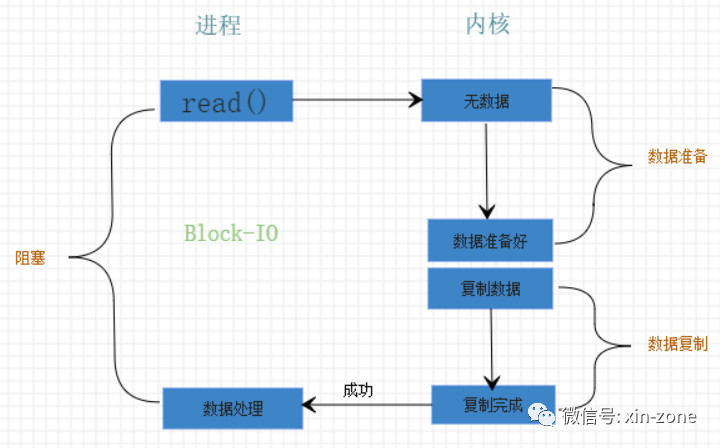

为什么httpd的Event模块比worker更优秀？简单的说是因为event模块采用epoll方式，而worker模块采用select方式。
那么为什么epoll就比select优秀？大家常说的epoll跟select又是个什么东西?
背景知识1-操作系统
操作系统分为用户空间 跟内核空间。httpd ,tomcat以及JVM都是用户空间的进程。如果想读取磁盘上的一个文件，大概流程是这个样子的。用户空间进程首先发起系统调用，操作系统通过驱动程序操作硬件，将磁盘上的数据加载到内核空间，然后从内核空间复制到用户空间，这个时候用户进程就可以操作数据了。
将数据从磁盘或网络设备复制到内核空间的过程称为数据准备阶段，将数据从内核空间复制到用户空间的过程称为数据复制阶段。数据准备阶段一般不需要CPU参与，而数据复制阶段是需要CPU参与的。
如下图所示
背景知识2-I/O模型
linux把一切都看做文件，所以网络连接(socket)也是文件。对文件的操作需要一个文件描述符(file descriptor)；而对文件的操作，本质上就是对I/O的操作。
I/O模型大概分为如下几种。
阻塞IO(Blocking I/O）
用户进程发起系统调用，检查内核空间是否有数据，没有数据则从硬盘将数据拷贝到内核空间，这个过程就是上面提到的数据准备阶段，然后将内核空间的数据在拷贝到用户空间中，这个过程是数据复制阶段。这个时候用户进程开始处理数据。
一图胜千言。

阻塞I/O在数据准备和数据复制两个阶段都被阻塞。这个模型最大的优点就是简单。而最大的问题就是处理的文件数变多之后，需要产生大量的进(线)程。Java的BIO采用的就是该模型。
非阻塞I/O(Non-Blocking I/O)
非阻塞I/O指的是数据准备阶段不会造成阻塞，而是处于不断的轮询的状态，如果没有数据，则返回EWOULDBLOCK，有数据之后，进行数据复制操作，数据复制阶段进程处于阻塞状态。
一图胜千言。
这种模式一般不会单独使用，但是这种模式成就了下面要介绍的I/O复用模型。
I/O复用(I/O Multiplexing)
咳咳，重点来了。操作系统帮我们实现了非阻塞I/O模型中，数据准备阶段的轮询操作。内核提供了三个系统调用函数来监控文件是否就绪的状态，分别是select, poll, epoll。所谓的多路复用就是可以同时监控多个文件描述符。任意一个文件描述符就绪就开始处理。
一图胜千言。
信号驱动式(Signal-Driven IO)
用的不多，了解一下就好。首先发起一个信号处理的系统调用，如sigaction()，这个系统调用会立即返回。数据在准备好时，会发送SIGIO信号，进程收到这个信号就知道数据准备好了，于是发起操作数据的系统调用，如read()。在发起信号处理的系统调用后，进程不会被阻塞，但是在read()将数据从内核空间复制到用户空间时，进程是被阻塞的。
一图胜千言。
异步I/O(Asynchronous I/O)
当设置为异步I/O模型时，首先发起异步系统调用，如aio_read()，aio_write()等，并立即返回。这个异步系统调用告诉内核，不仅要准备好数据，还要把数据复制到用户空间中。整个过程都不会被阻塞。
一图胜千言。

I/O总结：
上面说了那么多I/O，估计都被我忽悠晕了，一会儿阻塞非阻塞，一会儿同步异步的。
简单总结一下，阻塞I/O、非阻塞I/O、I/O复用、信号驱动都是同步I/O模型。只有异步I/O模型才是异步操作。
一图胜千言。
为什么是多路复用IO
多路I/O复用的关键优势在于，它可以一个线程管理多个socket的状态。Apache的httpd以及Nginx，还有Redis都是得意于此种I/O模型。
给大家举个小例子，这样大家理解起来可能就更形象了。
饭店服务员在有顾客进来的时候，把顾客迎进来，然后站在顾客旁边，等着点菜。点完菜交给厨师。这期间服务员什么都做不了。这就是阻塞I/O。如果想同时服务多个顾客就需要多个服务员。服务员相当于进程，进程多了耗费硬件资源不说，管理这些进程的上下文切换也很费事。
如果服务员只负责把顾客迎进来，等顾客点好菜之后，自己告诉服务员，那么服务员的效率将大大提高。一个服务员就可以同时服务很多顾客了。这就是I/O复用模式。就问你厉害不厉害。
select与epoll
select()函数是最先被Linux支持的多路复用I/O函数。但是select()函数最多只支持1024个连接，如果监控的连接有数据到达，select()函数只会告诉你有数据准备好了，至于哪些socket有数据了，需要自己去遍历。如果连接数少还可以，数据量一大，这酸爽！而且还是非线程安全。
poll()函数在1997年被实现，其实跟select()工作方式类似，主要修改了1024这个限制。估计大家认为当时的服务器硬件水平撑1K多个连接已经很厉害了，所以就没有在性能方面做进一步优化，同样还是非线成安全的。
epoll()函数是2002年实现的，也就是说linux2.6之前的版本用不了。epoll函数改变的挺多，首先变成线程安全了，同样也没有最大连接数限制了。而且采用回调函数的方式处理链接，哪个链接有数据了处理哪个链接，再也不用去轮询了。这就是Reactor编程。同时epoll()很好的解决了著名的C10K问题(即单机支持1万个并发连接问题)。
这里有一份性能测试对比图。大家可以感受一下。
结束
这就是为什么event比worker优秀了。注意event是在httpd的2.4版本之后才变得稳定的，之前是实验版本。同时需要操作系统内核是Linux2.6以上的版本才可以使用。
推荐阅读